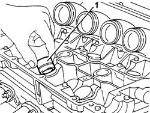

1036H54 HYDRAULIC TAPPET (one) - Replace with camshaft removed
- Path
- Procedures > 10 ENGINE > 1036 TIMING SYSTEM > 1036H TAPPETS AND ROCKER SHAFTS > 1036H54 HYDRAULIC TAPPET (one) - Replace with camshaft removed
- Kind
- repair procedure (removal / refitting; the operation number is the code)
- Applies to
- engines: 3.0 V6, 3.2 V6; all production periods
- Interactive page
- https://sloeber94.github.io/elrnDB-lThss/en/#/91882
Applies to: engines: 3.0 V6, 3.2 V6; all production periods
 Removing
Removing
 Refitting
Refitting1. Release the hydraulic tappet to be replaced from the housing in the cylinder head and remove it.

Applies to: engines: 3.0 V6, 3.2 V6; all production periods
Refitting
Removing- Lubricate with engine oil and fit a new hydraulic tappet in the housing in the cylinder head.